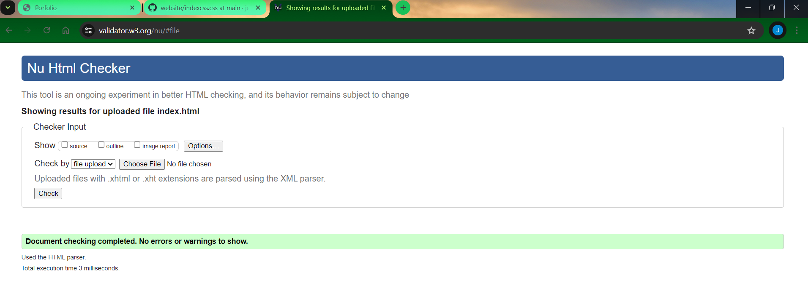
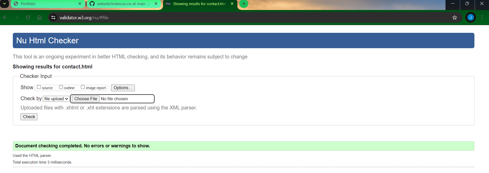
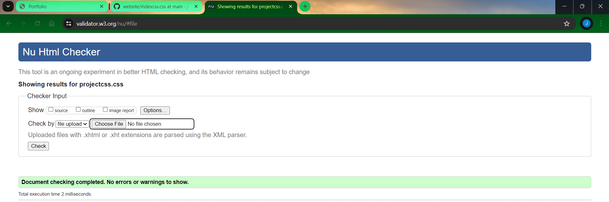
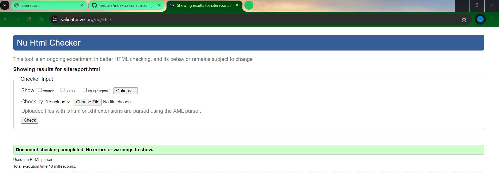
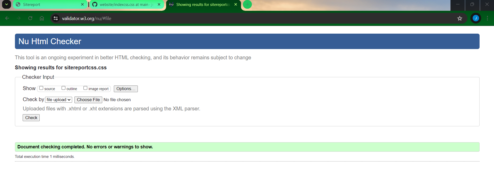

Reflective Discussion on Learning Web Development
Introduction
I was both excited and nervous to start my web development career. At first, the huge world of coding, design, and debugging seemed overwhelming, but as I explored deeper, I discovered that it was a fulfilling and enriching experience.
Initial Stages
Learning the Basics of Coding Understanding HTML and CSS, the basic languages of web development, was the first step. While CSS added style, HTML supplied the framework. It was difficult at first to understand each language's syntax and features.Still, W3Schools, MDN Web Docs, and The Codecademy were helpful in lowering the learning curve by offering thorough tutorials and examples.
Technical Challenges and Debugging
During my journey, the debugging process was one of the most difficult but informative parts. Typical problems included non-functional JavaScript due to syntax flaws and damaged layouts caused by incorrect CSS settings. I grew really good at using tools like Chrome DevTools, which let me inspect items, debug JavaScript, and improve efficiency. I learned the value of paying close attention to details and the repetitive nature of coding from the process.
Development Progress and Validation
My website had major modifications during the semester. It started out as a simple basic page, but as my confidence grew, I added more sophisticated features like form validation with JavaScript, animations with CSS transitions, and responsive design with queries for media. It was essential for cross-browser compatibility and overall site speed that my HTML and CSS verified correctly. Clean and effective code was ensured by the assistance of the W3C Content Validation Service in finding and fixing issues.
Video Demonstration
I created a video demonstration which you can see here to give you a thorough rundown of the features and layout of my website. The site's main functions, visual indicators, and interactive parts are all addressed in this video.
Conclusion
As I think about my work with web development, I see that learning to code is similar to solving a riddle. Every bit of information and ability acquired helped to create a website that was both aesthetically beautiful and functional in the larger scheme of things. Even though there were times when I felt annoyed it was really fulfilling to watch my website take off. My technical proficiency has increased as a result of this experience, but it has also deepened my appreciation of the art and science of web building.
Screenshots of Validation Reports
    